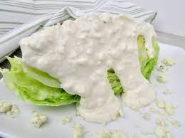

Keto Blue Cheese Dressing

Description
Wonderfully creamy. So versatile. Enjoy this tangy keto sauce on salads, meat, or chicken. And it works as a super tasty dip for veggies. Can you say winning?
Ingredients
- 140 (g) blue cheese
- 180 ml (140 g) Greek yoghurt (4% fat)
- 2 tbsp mayonnaise or vegan mayonnaise
- 60 ml heavy whipping cream
- salt and ground black pepper to taste
Instructions
- Place the cheese into a small bowl and use a fork to break it up into coarse chunks.
- Add yoghurt, mayonnaise, and heavy whipping cream, mixing until well combined.
- Let sit for a few minutes to allow the flavours to develop.
- Salt and pepper to taste.
Tips
- This dressing keeps for 3-4 days in the refrigerator.
- Try this dressing on a fresh, chopped salad, topped with some avocado.
- Or on top of cheeseburgers. Absolutely delicious!
Nutrients
| Carbs |
Protein |
Fat |
Calories |
Fibre |
Sugar |
Sodium |
Calcium |
Sat |
GL |
| (g) |
(g) |
(g) |
(kCal) |
(g) |
(g) |
(mg) |
(mg) |
Fat (g) |
(g) |
| 2.98 |
12.16 |
25.03 |
281.22 |
0.08 |
2.13 |
574.38 |
248.93 |
12.59 |
0.58 |
Back to top of page